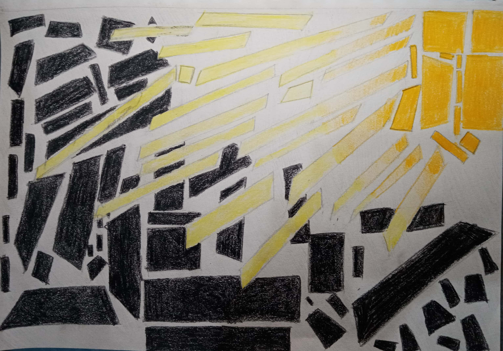

This artwork shows what hope is to Group 9B-2.
The Black-colored quadrilaterals shows the darkness or the sufferings and the orange to yellow-colored quadrilaterals
shows the light/hope or human perseverance.
This piece shows that no matter how dark the situation is, the human perseverance will come on top.
It also depicts that as long as we do something we will progress.
Add working hard to that and we will eventually defeat it.